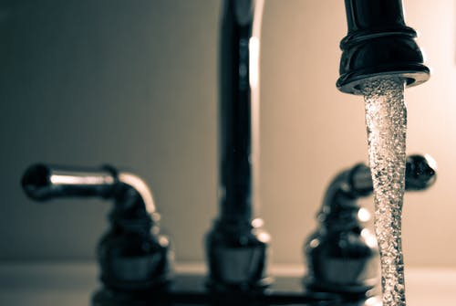

The second of the three music videos is related to the the properties of water. We start off with some basics: Water is the universal solvent (which means that water dissolves many substances) and we also are told that "Sugar and alcohol both dissolve in it but these are not lit". What does this even mean?